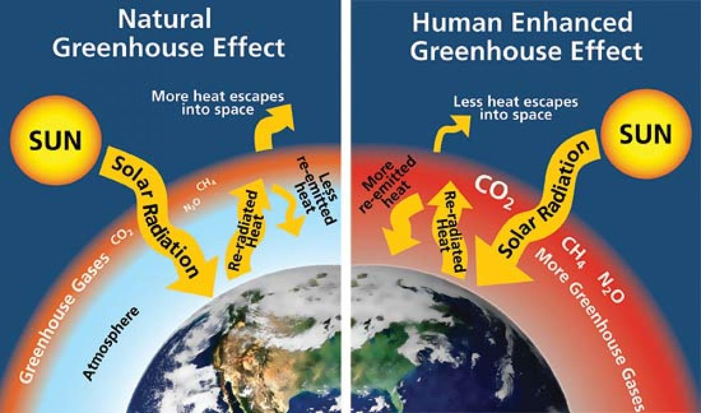
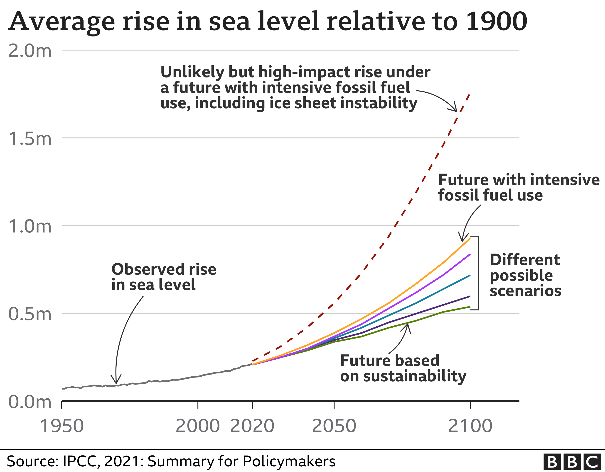
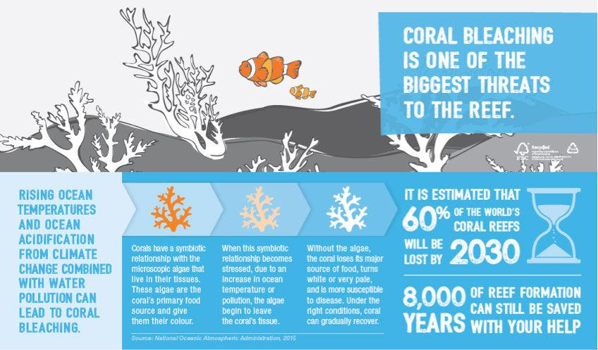
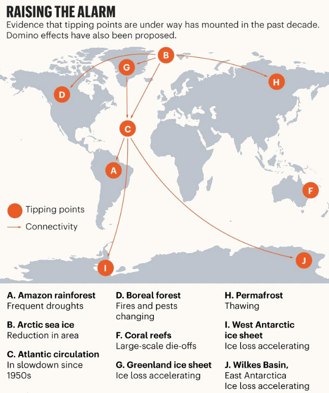

Climate Change
Global Warming Overview
Global warming is the continuous heating of the Earth’s climate occurring since the pre-industrial period. During these last hundred years, the warming pace has considerably increased due to human activities, mainly fossil fuel burning. The burning of these fossil fuels and some other factors cause the greenhouse effect in the Earth’s atmosphere.
The greenhouse effect is caused by the accumulation of gases in the atmosphere, such as carbon dioxide, methane, water vapor, chlorofluorocarbons, and nitrous oxide. When the Sun rays enter the atmosphere and reflect on the Earth’s surface, the gases trap the heat inside it. This excess trapped heat is what is causing the rise of the Earth’s global temperature over time.
Global warming and climate changes are terms that people use interchangeably, but they are different. Climate change not only includes global warming stemming from human greenhouse gas emissions, but it also consists of the resulting large-scale changes in weather patterns around the world. It’s these changes that give rise to extreme weather events, wildlife population and habitat relocations, rising sea levels, and more.
Ice Sheets Collapse
Some researchers think that the tipping point of cryospheres is close. If nations implement more substantial greenhouse gas emission reductions during the following years, their impact on the ocean and cryosphere ecosystems can slow down.
Over the last few decades, the data shows that the cryosphere has been continuously shrinking, with glaciers and ice sheets losing mass due to surface melting. Both Greenland and Antarctic ice sheets are melting and accelerating the rise of the global sea level.
If global temperatures continue to rise to 1.5 – 2°C, the melting of these ice sheets may accelerate and become irreversible. The current warming level sits at 1.1°C, but further regulations have to be implemented to prevent it from increasing. Scientists stress that the maximum permissible limit is 1.5°C by the year 2100, as it would avoid the chances of crossing a tipping point.
Biosphere Boundaries
If global temperature continues to rise, it can bring about the point of no return for some biospheres. During the last decade, we’ve already felt some effects of it. Coral mass bleaching and the loss of half of the shallow-water corals on the Great Barrier Reef are some of the consequences of the current ocean heatwaves
Should the global average temperature reach up to 2°C, 99% of tropical corals are expected to disappear due to further ocean warming, acidification, and pollution. Corals represent a great deal of biodiversity and human livelihoods, so losing them is a huge impact
Regarding the deforestation and climate change of the Amazon rainforest, its tipping point can range from 40% to 20% deforestation. The best course of action is to build a safety margin that limits deforestation to under 20% of the area, the main reason being that there’s no point in risking going over it to discover the precise point of no return
Global Cascade
Some of the most alarming science surrounding climate change is the discovery that it may not happen incrementally — as a steadily rising line on a graph — but in a series of lurches as various “tipping points” are passed. And now comes a new concern: These tipping points can form a cascade, with each one triggering others, creating an irreversible shift to a hotter world. A new study suggests that changes to ocean circulation could be the driver of such a cascade. Some tipping points, they said, may already have been breached at the current 1 degree C of warming.
Their biggest fear is for the future of the global ocean circulation system, which moves heat around the world and may dictate global climate. They say melting Greenland ice in a warmer Arctic has driven a key component of ocean circulation to a thousand-year low. Further decline, which would lead to a shift in heat distribution around the planet, could trigger forest collapse in the Amazon; cause near-permanent drought in Africa’s Sahel region; disrupt Asian monsoons; rapidly warm the Southern Ocean, which would cause a surge in global sea levels as the West Antarctic Ice Sheet disintegrates; and potentially shift the planet to a new climate regime they call “hothouse Earth.”
The “climate emergency” is not just political rhetoric, they argue. It is now an identifiable scientific fact. Their message to the latest UN climate negotiations, under way in Madrid this week, is that the world may be almost out of time to prevent what they call an “existential threat to civilization.” Their study was released as a new report said that greenhouse gas emissions have hit a record high, with 40.6 billion tons of CO2 being pumped into the atmosphere in 2019.
Have We Already Reached the Point of no Return in Climate Change?
We haven’t, but we’re currently off track on the optimistic 1.5°C global warming target. Under the Paris Agreement, nations agreed to mitigate their greenhouse emissions to reach a target of under 2.0°C, preferably 1.5°C. The problem is that global warming would rise to 2.8°C by the year 2100 under the current pledges. Still, reaching 1.5°C doesn’t mean the world is ending, but the consequences of it are vast. Further national commitments are crucial to diminish the rate of warming.
Reaching the desired target requires halving the greenhouse emissions by 2030 and nearly eliminating them by 2050. The UN Climate Change Conference in Glasgow in November 2021 looks forward to tackling the issue and accelerating the participating parties’ objective of reaching the Paris Agreement goals.
What Are the Worst Consequences?
If the situation continues as it is, without any nation making further amendments to their emissions, the consequences can be significant. Between 2.0°C and 1.5°C, there is already a substantial gap in the effects.

Water availability issues would affect up to 50% more people at 2.0°C warming than 1.5°C. There would be a rise in heavy rainfall events and higher flooding risks for northern hemisphere zones, and more areas can be subject to flooding and runoffs.
It would harshly impact biodiversity and ecosystems, resulting in the extinction of many insects, plants, and vertebrates. Risks of extreme weather events, forest fires, and invasive species would be higher, and a large percentage of biomes are expected to shift from one biome type to another.
How to Reduce Your own Carbon Footprint
Currently, it’s valid to say that the most significant emergency the world is facing is global warming and climate change. The world is already feeling some global warming effects, and it can be worse in the future if nothing is done. On an individual level, a person’s contribution to stop global warming isn’t too meaningful, but we aren’t alone.
Reducing your carbon footprint by
-
1. Stop buying your water in plastic. Get a reusable water bottle and keep it filled and with you at all times. You’ll save money and the environment!
- 2. Incorporate walking or biking to some of your regular short-trip destinations. In most instances, you can walk a mile in less than 20 minutes. This is a great way to add exercise to your busy schedule.
- 3. Turn off lights and unplug devices when you’re not using them. Every little action adds up!
- 4. Keep the tires on your car properly inflated and get regular tune-ups. When your car’s tires are low on pressure, it has to work harder to move from point A to point B, wasting gas and increasing emissions in the process.
- 5. Eat more food that is grown or made locally and less red meat. Taste the difference, feel better and support the local economy!
- 6. Use the cold water cycle for washing your clothes. And do your laundry in FULL loads. This will decrease the amount of water and energy used, helping you save time and money. Bonus points for line-drying – it takes a lot of energy to power your dryer!
- 7. Set your thermostat to 78 in summer and 67 in winter. And turn-off the heat and AC when you’re not home. You’ll be surprised at the difference it makes in your energy bill.
- 8. Drive efficiently. Use the accelerator lightly, coast to red lights, stay near the speed limit, and park and go inside instead of idling your engine in a drive-thru.
- 9. Keep stuff out of the landfill. Sell items you no longer use to thrift shops, have a yard sale, or donate them to charity. Recycle or repurpose everything you can’t get rid of.
- 10. Use alternative transportation (bus, train, carpool, or bike) to get to work one day per week. Enjoy the chance to catch up on your reading instead of testing your patience in traffic!
Sources